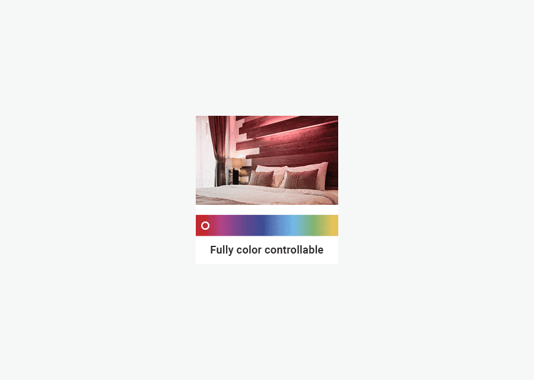
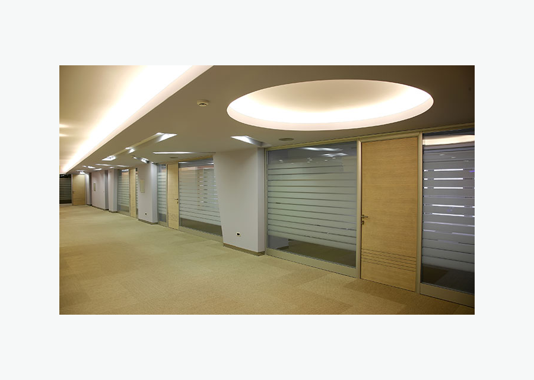

Especificar por tipo
Fita LED COB, Fita Neon LED, fita RGB e fita branca para diferentes efeitos de luz.
Explorar
Coleção SEO • Prioridade Alta
Encontre fita de LED para iluminação decorativa, funcional e arquitetural em ambientes residenciais, comerciais e corporativos. Escolha por tensão, temperatura de cor, proteção IP, tipo de instalação e compatibilidade com fonte, perfil de alumínio, conector e controle.
Mapa técnico
Estrutura adaptada para SEO B2B em português do Brasil, com navegação por produto, aplicação, especificação técnica e acessórios do sistema.
Fita LED COB, Fita Neon LED, fita RGB e fita branca para diferentes efeitos de luz.
ExplorarBranco quente 3000K, branco neutro 4000K, branco frio 6500K e RGB.
ExplorarSanca, quarto, cozinha, banheiro, vitrine, fachada e área externa.
ExplorarFonte, perfil de alumínio, conector, dimmer e controle compatíveis.
ExplorarProdutos e filtros
Palavra-chave principal: fita de led. Secundárias: fitas de led, fita de led branca, fita de led rgb, fita de led sem fonte, fita de led 12v, fita de led 3000k.

Linha versátil para sancas, móveis e iluminação indireta.

Efeito colorido para decoração, painéis e vitrines.

Proteção para fachadas, varandas cobertas e pontos úmidos.

Guia de especificação
A escolha da fita de LED deve começar pelo efeito desejado. Para sancas, tetos de gesso e iluminação indireta, fitas de LED branco quente ou neutro criam acabamento confortável e uniforme. Para móveis, armários, cozinhas e vitrines, avalie brilho, temperatura de cor e facilidade de instalação. Em projetos com traço de luz contínuo, a fita LED COB reduz a percepção de pontos. Também é importante definir a tensão. Em instalações curtas, 12V pode atender bem; em trechos maiores, 24V ajuda no controle de queda de tensão quando especificada corretamente. Para áreas externas, banheiros ou fachadas, priorize IP adequado e acessórios compatíveis.
Aplicações
As páginas de aplicação devem receber links internos desta coleção para capturar tráfego de cauda longa e orientar o comprador por ambiente.
Iluminação indireta para salas, quartos e áreas sociais.
Planejar aplicaçãoLuz funcional sob prateleiras, bancadas e marcenaria.
Planejar aplicaçãoDestaque de produtos, gôndolas, nichos e comunicação visual.
Planejar aplicaçãoFAQ técnico
Respostas curtas ajudam o usuário a decidir e também estruturam conteúdo para rich results quando a plataforma permitir FAQPage schema.
Use fita com temperatura de cor adequada e potência compatível com o efeito desejado. Para acabamento contínuo, considere fita LED COB com perfil de alumínio.
Sim. Fitas de baixa tensão precisam de fonte compatível com a tensão e a potência total da instalação.
A maioria pode ser cortada apenas nos pontos marcados pelo fabricante. Depois do corte, use conector ou solda adequada.
Sim, desde que o modelo tenha proteção IP adequada e os acessórios também sejam próprios para umidade.
Cotação B2B
Envie comprimento, tensão, temperatura de cor, ambiente de uso e prazo. Nossa equipe ajuda a combinar produto, fonte, perfil, conector e controle corretos.